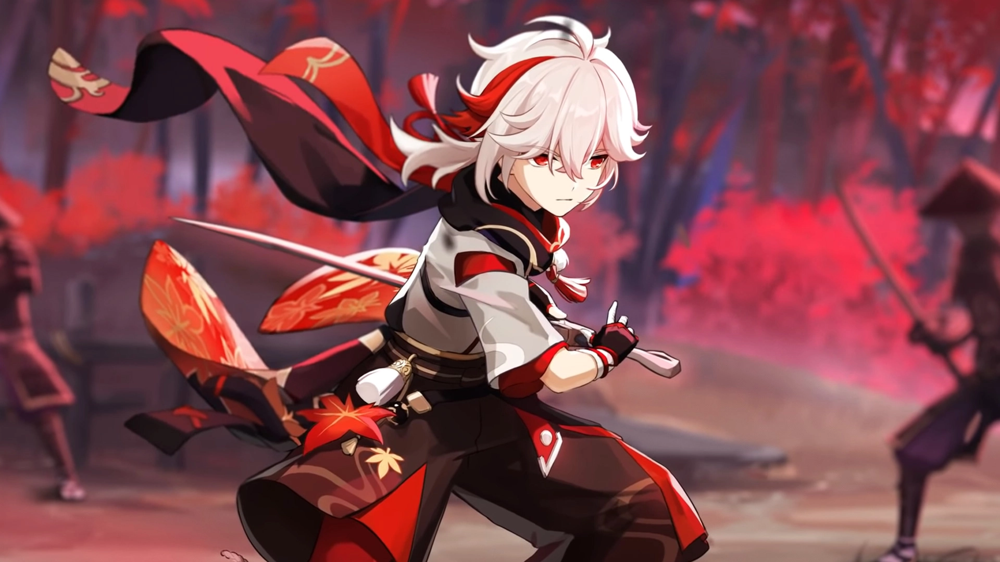
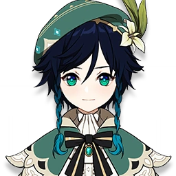
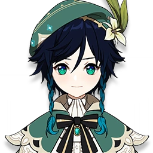

Kazuha Guide
Kazuha is a Anemo Sword Character that specializes as a Support.
Overview
Kazuha is popular because of his insane buffing, strong crowd control, and elemental application capabilities.

Elemental Skill: Chihayaburu
Casting Kazuha’s Elemental Skill will pull enemies in towards Kazuha and launch Kazuha into the air. After being launched, Kazuha can perform a special plunging attack called Midare Ranzan, which will deal Anemo damage and is affected by Kazuha’s Normal Attack talent; this attack’s Anemo infusion cannot be overridden by another element and is not considered skill damage. The skill will also absorb an element, which will allow Kazuha to also deal damage aligned to the absorbed element after plunging. Holding this skill will cause a larger vortex and a higher plunge.
There are no downsides to this skill except for the long casting time. Absorbing an element provides shred for that element to that enemy, and the vortex stays on the field so other enemies can also be pulled in. As a rule of thumb, Kazuha should use his hold E if a main DPS unit is about to go on-field, and use his tap E in other scenarios.
Elemental Burst: Kazuha Slash
A single slash that strikes with the force of the first winds of autumn, dealing AoE Anemo DMG. The blade's passage will leave behind a field named "Autumn Whirlwind" that periodically deals AoE Anemo DMG to opponents within its range.
Elemental Absorption:If Autumn Whirlwind comes into contact with Hydro/Pyro/Cryo/Electro, it will deal additional elemental DMG of that type.
Elemental Absorption may only occur once per use.
Kazuha’s Elemental Burst has a certain infusion priority; if multiple elements are present, Kazuha’s burst will prioritize Pyro > Hydro > Electro > Cryo. Knowledge of this infusion priority can allow players to control what element Kazuha infuses, increasing his support capability. This Burst also provides shred to whatever element is within it, so plan carefully to get the most out of his Burst.
Constellations
C1: Scarlet Hills
Allows him to use less energy recharge in his kit, as it gives him an extra cast of his elemental skill after using his burst. This allows him to use more Elemental Mastery in place of ER; however, it runs into the same problem as the Sacrificial Sword: the more time that Kazuha spends on-field casting his elemental skill, the more field time Kazuha takes away from the team’s other units.
C2: Yamaarashi Tailwind
This constellation makes him strictly better at supporting reaction-reliant units, like Melt Ganyu and Vape Diluc, than Sucrose. His C2 buff alone is competitive with Sucrose’s EM buff. Sucrose gets the benefit of being able to use Thrilling Tales of Dragon Slayers, but this is more than matched by Kazuha’s A4 Elemental DMG% team buff (if Kazuha is using EM artifacts). Most units will gain more damage from Elemental DMG% than ATK%, especially if those units are already being buffed by Bennett or by other external sources of ATK
C3: Maple Monogatari
+3 to his Skill. Not terrible, but not very useful either.
C4: Oozora Genpou
The first part of this constellation can be used in conjunction with Kazuha’s first constellation to grant Kazuha a large amount of energy at once, allowing him to run even less energy recharge in exchange for using more damage-focused stats. While the gliding effect of Kazuha’s fourth constellation has little practical use in combat, it can actually be useful outside in the overworld, where Kazuha will be gliding to travel between locations pretty frequently.
C5: Wisdom of Banseie
+3 to his Burst. Great for one-shotting bosses, and is a general damage increase.
C6: Butterfly’s Embrace
Kazuha’s Constellation 6 allows him to function much better as an on-field DPS unit. As an on-field DPS at Constellation 6, Kazuha’s best build becomes more of a toss-up. His ATK/Anemo/Crit build pulls ahead of his EM/EM/EM build by about 6%, with this number increasing with the amount of external buffs Kazuha gets – with Bennett’s buffs, Kazuha’s ATK/Anemo/Crit build is about 11% better than his EM/EM/EM build. If you want to use him as a DPS, this is a must, but Support Kazuha gets very little use out of this.
Teams
Kazuha is one of the most flexible units in the game, but usually needs another Anemo unit to battery for him. You can run him without one, but you might need to sacrifice some EM for ER. He is a must for reaction teams.
Kazuha + Xiangling + Ganyu
Kazuha + Venti + Fischl

 


Kazuha + Xiangling + Childe
Kazuha + Xingqiu + Raiden